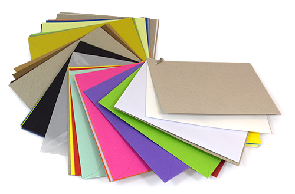

Omslagen
Wat zijn Omslagen?
Definitie
Omslagen zijn beschermende en decoratieve covers die vaak worden gebruikt voor boeken, brochures, rapporten, en andere gedrukte materialen. Ze bieden zowel fysieke bescherming als een visueel aantrekkelijke presentatie van de inhoud.
Voordelen van Omslagen
- Bescherming: Omslagen beschermen de inhoud tegen beschadigingen, vuil en slijtage.
- Professionele Uitstraling: Een goed ontworpen omslag geeft een professionele en verzorgde uitstraling aan uw documenten.
- Veelzijdigheid: Omslagen kunnen worden aangepast in termen van materiaal, afwerking, en ontwerp om aan specifieke behoeften te voldoen.
Toepassingen van Omslagen
Omslagen worden vaak gebruikt voor:
- Boeken: Voor zowel harde als zachte kaften van boeken.
- Brochures: Voor een beschermende en aantrekkelijk gepresenteerde omslag.
- Rapporten: Om zakelijke of academische rapporten een professionele afwerking te geven.
- Presentatiemapjes: Voor het presenteren van documenten op een georganiseerde en professionele manier.
Hoe Werkt het Ontwerpen van Omslagen?
Het ontwerpen van een omslag begint met het kiezen van het juiste materiaal en formaat. Vervolgens wordt het ontwerp gecreëerd, waarbij rekening wordt gehouden met het doel van de omslag en de branding. Omslagen kunnen worden voorzien van speciale afwerkingen zoals reliëfdruk, foliedruk, of laminering voor extra bescherming en esthetiek.
Belangrijke Overwegingen bij het Ontwerpen van Omslagen
- Materiaalkeuze: Kies een materiaal dat zowel bescherming als een goede uitstraling biedt.
- Formaat en Pasvorm: Zorg ervoor dat de omslag goed past bij de inhoud en eventuele extra's zoals flappen of zakken.
- Afwerking: Overweeg afwerkingen zoals laminering of spot-UV voor extra bescherming en visuele impact.